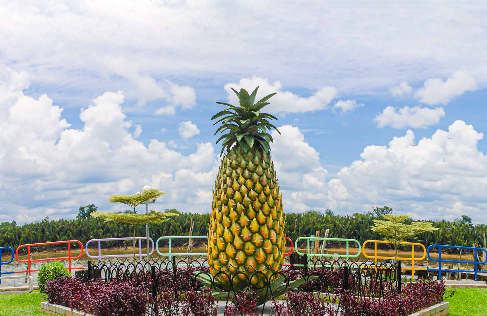
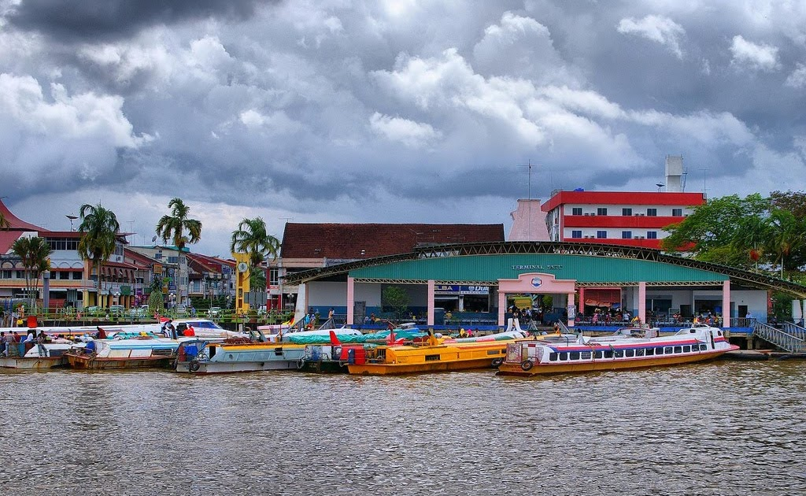

ABOUT SARIKEI
The Sarikei town also is 985 square kilometres. Sarikei is known for its sweet and juicy pineapple production. Thus, Sarikei is also known as "pineapple town". Sarikei has also become the main supplier of fruit, vegetables for Sarawak. Thus, the town is also nicknamed as the "food basket" of Sarawak. Sarikei Town is the capital of Sarikei District. It is located on the Rajang River, near where the river empties into the South China Sea. The town itself consists of a main road, Repok Road which is bisected by another road leading to the new development in Kampung Seberang which is known as Susur Jambu.
Kampung Seberang Sarikei is one of the villages located in the Sarikei town. Kampung Seberang Sarikei is only 2.3 kilometres away from the Sarikei Town, which mean it takes less than 10 minutes by car. Sarikei District Council was set up in January 1955. The council was tasked to administer the Sarikei district, public health, local sanitary system, public works, and fire rescue. Major ethnic groups in Sarikei are Chinese, Iban, and Malay. Sarikei is a charming town with a lot to offer visitors. If you're looking for a place to escape the hustle and bustle of city life, Sarikei is a great option.
Back To Top
TRANSPORT
1. Land
The road connectivity improved over the years. Bus transportation has flourished since then.
| Bus | - Short Distance Bus Terminal - Long Distance Bus Terminal |
| Car | - Sibu to Sarikei takes one hour - Sarikei to Bintangor takes 20 minutes. |
| Grab | - Available in Sarikei - Since 2018 |
2. Water
In 1970s, water was the major form of transport from Sarikei to other towns near the Rajang river. As the road condition improved over the years, water transport in Sarikei become less favourable. There is one express boat terminal in Sarikei that provide water transportation to Kuching, Sarawak.
Terminal Satu
Back To Top